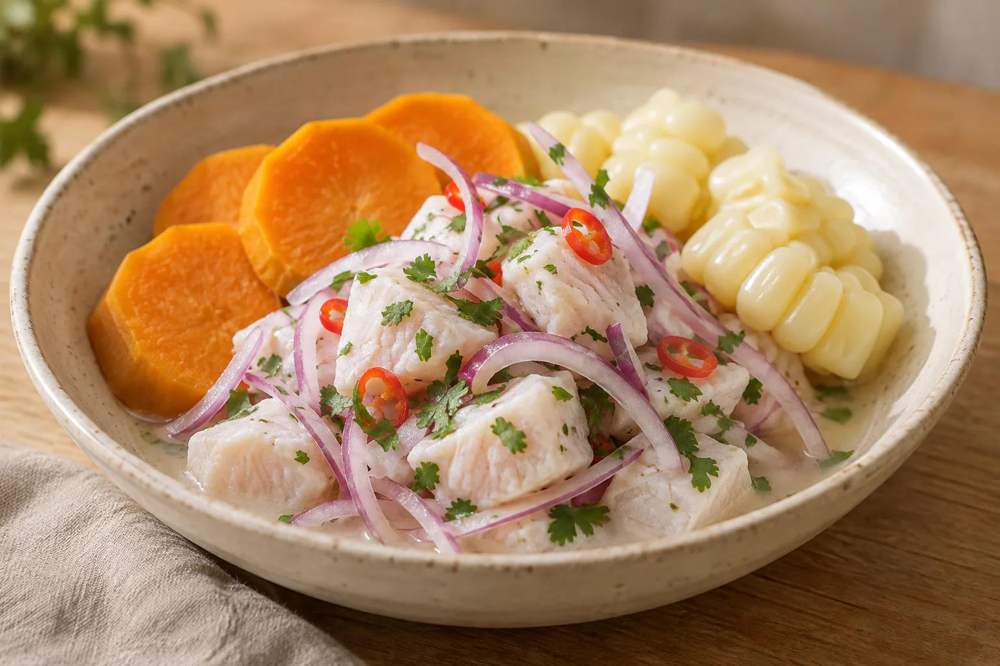

PIURA, PERÚ · TRADICIÓN FAMILIAR
El sabor del mar, hecho tradición.
Una receta de ceviche que nos conecta con nuestras raices, el mar y la mesa familiar.
Descubre nuestra receta

PIURA, PERÚ · TRADICIÓN FAMILIAR
Una receta de ceviche que nos conecta con nuestras raices, el mar y la mesa familiar.
Descubre nuestra receta
